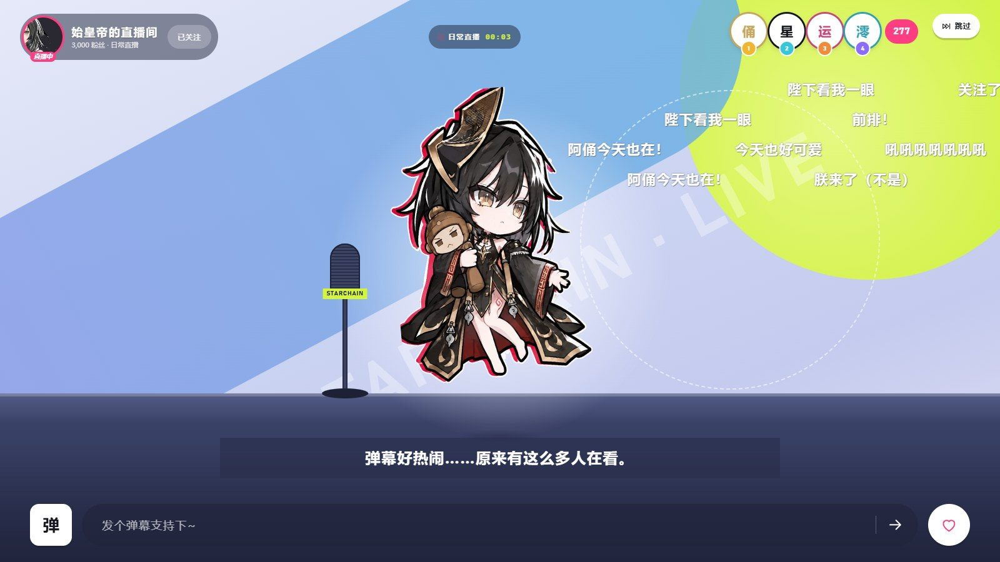

TapTap 21-Day Game Challenge · In development · Project LeadTapTap 聚光灯 21 天挑战 · 开发中 · 项目负责
Project:IDOL
Unity 6 · WebView2 · Idol-Management Card Roguelite · PC + Android
An idol-management card roguelite built by a six-person team in 21 days. Players plan each idol's schedule across node-based runs, play cards in live-stream battles and unlock story arcs between runs. I lead the team, set up the Unity project, own integration, and made the save and progress flow reliable. 六人团队在 21 天内制作的偶像养成卡牌 roguelite。玩家在节点式的单局里安排偶像行程，在直播间里打牌对战，局与局之间解锁偶像剧情。我负责统筹团队、搭建 Unity 工程、管理代码集成，并让存档和进度流程稳定可靠。
Problem问题
In battle, relics changed stats silently and action cards jumped straight to a final score. Players saw numbers move but not why.
战斗中遗物生效时数值悄悄变化，行动卡直接跳出最终分数。玩家看到数字在变，却不知道为什么。
Decision决策
Rework the presentation one beat of the battle at a time: relics resolve one by one into a fixed ledger, and each action-card score is built as a formula from its sources.
按战斗环节逐个重做表现：遗物逐个结算进固定的结算栏，行动卡分数拆成算式，每个数字从来源飞进来。
Outcome结果
Every score now shows where it comes from, with rules untouched: scores are identical before and after. On a review branch, not yet merged.
现在每个分数都看得出来源，规则没有改动：改前改后得分完全一致。目前在评审分支上，还没合进主线。
A web interface inside UnityUnity 里跑网页界面
The interface is plain HTML, CSS and JavaScript, shown inside Unity through an embedded WebView2 that captures straight into a Unity texture. Unity and the page talk over a typed command and event contract: Unity sends content and progress down, and the page reports every screen change, card play and result back up. This split let teammates iterate on screens in a browser while game rules stayed in C#.
界面用原生 HTML、CSS 和 JavaScript 写，通过内嵌的 WebView2 显示在 Unity 里，画面直接抓取到 Unity 纹理。Unity 和网页之间有一套定义好的命令和事件协议：Unity 往下发内容和进度，网页把每次切换界面、出牌和结算报回来。这样队友可以在浏览器里改界面，游戏规则留在 C# 里。
Leading and integrating a six-person team统筹六人团队，管理集成
Integration. I created the Unity project on day one and merged the team's parallel work (interface, input fixes and a headless battle module) through reviewed pull requests, keeping one branch the whole team could build from.
集成。第一天由我建好 Unity 工程，之后通过评审过的 PR 合并大家并行开发的内容（界面、输入修复、无界面的战斗模块），保证全队始终有一条能直接构建的主线。
Team boundary. Teammates built the battle engine, the first interface build, the art, card illustrations and voice. My code work is integration, save reliability, interaction fixes and battle trigger feedback.
协作分工。战斗引擎、界面首版、美术、卡牌插图和配音由队友完成。我的代码工作集中在集成、存档可靠性、交互修复和战斗触发反馈。
Making progress hard to lose or exploit让进度不会丢，也没法钻空子
A teammate built the save layer; I hardened it against the cases that break trust in a roguelite. The game now writes a checkpoint before every battle, so reloading can't undo a loss. Purchases are committed before the screen changes. A save that loses a revision conflict reloads the session explicitly. A rejected save offers a clear way out instead of trapping the player behind a dialog. Autosave stays quiet unless it is slow or failing. Each fix has a Node regression test.
存档底层由队友搭建，我负责处理那些会让 roguelite 玩家失去信任的情况。现在每场战斗前都会写检查点，读档撤销不了败局；购买在切换界面之前先提交；存档发生版本冲突时明确重载会话；存档被拒绝时给出清楚的出口，不会把玩家卡在弹窗里；自动保存平时不打扰，只在变慢或失败时提示。每一处修复都配了 Node 回归测试。

Battle feedback: showing where every number comes from战斗反馈：让每个数字看得出来源
In the original battle, relics changed stats with no animation, and an action card jumped straight to a final score. Players could see numbers change but not why. I reworked the presentation one beat of a battle at a time (opening, turn start, strategy card, action card, turn end), recording old and new versions of each beat side by side so the team could compare them.
原来的战斗里，遗物生效时数值直接变，没有任何表现；行动卡打出去直接跳出最终分数。玩家能看到数字在变，却不知道为什么。我按一场战斗的 5 个环节（开场、回合开始、策略卡、行动卡、回合结束）逐个重做表现，每个环节都录了新旧对比，方便团队一起判断。
Research first. Before changing anything, I studied the scoring moments of five card games (Balatro, Slay the Spire, Marvel Snap, Hearthstone, Luck be a Landlord) frame by frame. They share four habits: numbers appear at their source, there is a fixed place to read the ledger, the rhythm is even, and effects resolve fast while the show plays out slower.
先做调研。动手之前，我逐帧分析了 5 款卡牌游戏的结算时刻（小丑牌、杀戮尖塔、漫威终极逆转、炉石传说、幸运房东）。它们有四个共同做法：数字从来源处冒出来，有固定位置可以看账，节拍均匀，生效快、演出慢。
Opening and turn start. Relics now resolve one at a time down the gem column. Each gem lights up, and a fixed ledger beside the column shows the relic's name, its effect and the value before and after. Every turn keeps the same beat, and the deal starts as the last relic lights up, so the extra feedback adds only a short pause each turn.
开场和回合开始。遗物沿宝石列从上到下逐个结算：宝石亮起，旁边固定的结算栏显示遗物名、效果和数值前后变化。每个回合节拍一致，最后一个遗物亮起时同时开始发牌，所以多出来的反馈每回合只多一小段停顿。
Scoring an action card. The card now stays on stage and a colour-coded formula builds under it (996 × 100% × 1.17 = 1,165), with each number flying in from where it comes from: viewers, the card's own percentage, and the charm bonus. The shout, gifts and screen shake wait until the total lands, scaled by how the score compares with the target.
行动卡得分。卡牌留在舞台上，正下方逐步出现彩色算式（996 × 100% × 1.17 = 1,165），每个数字从它的来源飞进来：同接、卡面百分比、魅力加成。喊字、礼物和震屏要等总分落下才出现，强度按得分和目标分的比例分档。
What I dropped or held back. A reworked strategy-card effect went back to the original after review. My first turn-end version labelled a resource effect in a way that read like enemy damage, so that beat is on hold until the team picks one of three options. I wrote out the underlying rule step by step so the decision could be made on the rule, not on my animation.
放弃和暂缓的部分。策略卡的新效果评审后退回了原版。回合结束的第一版里，我给一个资源效果起的提示读起来像敌人造成的伤害，所以这个环节暂缓，等团队在三个方案里选定。我把背后的规则一步步写清楚，让大家按规则本身做决定，而不是被我的动画带着走。
Rules untouched. The work changes presentation only. The scoring code now also records each factor so the formula can be shown; comparing every action card across a large set of game states, scores are identical before and after. Opening, turn start and action-card scoring are on a review branch and not yet merged.
规则没有改。这次只改表现。计分代码多记录了每个得分因子，用来显示算式；所有行动卡在大量状态下逐一对比，改前改后得分完全一致。开场、回合开始和行动卡得分这三部分在评审分支上，还没合进主线。